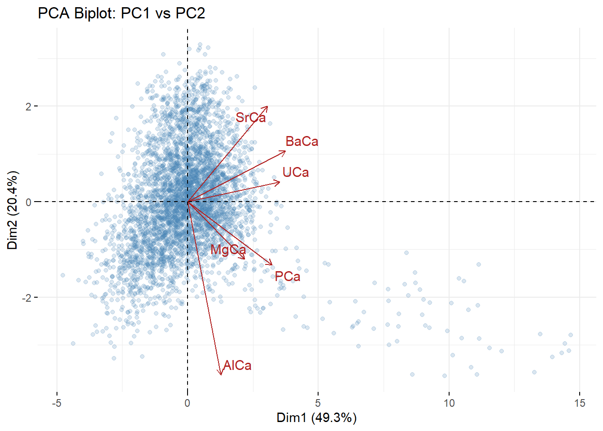
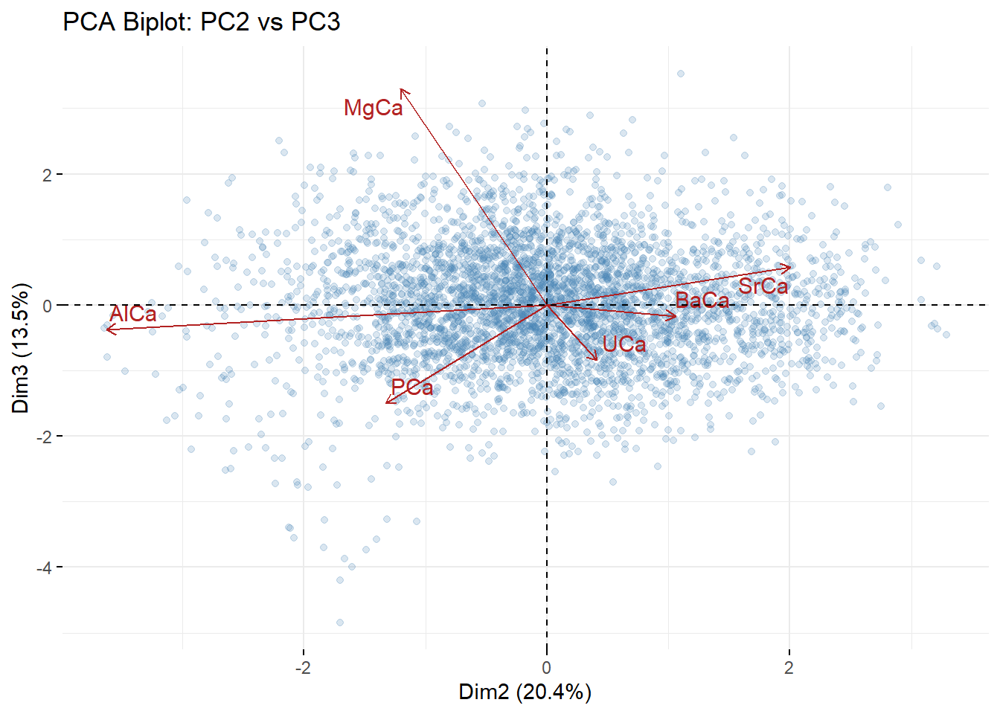

library(knitr)
library(scales)
library(tidyverse)
library(ggplot2)
library(tidyr)
library(factoextra)
library(forecast)
# maybe include other libraries:
# library(tidymodels)
# set up default plotting format for ggplot2 graphs
theme_set(theme_bw())Put the title of your project here
EES 4891/5891: Probability and Statistics for Geosciences
You forgot to give your project a title and put your name as the author.
Setup
Set up R environment by loading the necessary libraries
Introduction
Write the introduction: describe what data you’re going to study, why you’re interested in it, where you obtained the data, and any other relevant background.
Think about this as a report to be read. My intention was for you to replace my prompts with your text.
I’m not taking any points off for this, but keep in mind to think about a quarto document as a real report for someone to read.
Secondary cave minerals such as stalagmites host geochemical data that can record regional climate variability and have provided essential information on environmental relationships and impacts all over the world. A primary reason for the utility of stalagmites is their ability to be precisely and accurately dated using uranium-thorium (U-Th) geochronology. However, in the tropics, stalagmites are typically found in caves developed in young, uplifted fossil reef rocks. These host rocks can supply unsupported thorium to the growing stalagmites, thus limiting the ability to date them using U-Th techniques (1,2). CuraC’ao is a small island in the southern Caribbean north of Venezuela. On CuraC’ao, three uplifted fossil reef terraces host caves with actively precipitating stalagmites that may record recent environmental changes. However, U-Th dating efforts have produced ages much older than anticipated due to the increased and variable thorium.
The Caribbean Sea plays a critical role in mediating global climate. Small Island Developing States, such as CuraC’ao, are projected to face increased temperatures and intervals of drought, and heavier rainfall events (3). However, little information about long-term climate variability is available from the southern Caribbean. Further, while hurricanes are currently rare in CuraC’ao, their occurrence can have devastating effects on the local and regional economy, as evidenced by Hurricane Tomas in 2010 which led to $115 million in damages (4). To provide critical long-term context for modern changes and response to storm events, I am developing geochemical records from actively growing stalagmites collected from Hato Cave in CuraC’ao.
Four small (4-7 cm), actively dripping stalagmites were collected from Hato Cave in 2022. Upon removal of the stalagmites, artificial substrates were placed underneath the drip sites to collect fresh precipitating calcite. Preliminary oxygen isotope (d18O) analysis of stalagmite HC-2.5 reveals distinct negative excursions similar to hurricane signatures noted in other tropical stalagmite records [7]. Further, trace element (TE) data demonstrates regular fluctuations in Sr/Ca, U/Ca, and Mg/Ca. These fluctuations may record seasonal or inter-annual variations above the cave.
This is a very nice introduction that explains what data you will be analyzing, why it’s interesting and scientifically important and why Cura??ao is particularly interesting.
Data set
Stalagmites are archives for a wide array of proxy data. Trace element (TE) data has been collected using a Laser Ablation ICP-MS at Vanderbilt University Fall 2024 for a small rapidly growing stalagmite from CuraC’ao. The TE data has been normalised against Ca before being plotted against depth or age. The .csv file contains many minor elements. TE data has been collected for the full length of the stalagmite Hato 2.5 (H2.5). The TE .csv file has 3899 rows of data and 46 columns. However, the ones that will be focused on here will be 7 columns; Distance (from the top of the stalagmite), Mg/Ca, Sr/Ca, U/Ca, P/Ca, Al/Ca and B/Ca. While age would be the usual variable that TE would be plotted against, due to the many difficulties in attempting to date topical stalagmites, we do not have an age model for the stalagmite that we are confident has produced reliable ages for the full length of the stalagmite.
Good description of the specific trace-element measurements you will be looking at, and the stalagmite the observations come from.
data <- read.csv("H2.5.csv")The data gets kind of messy because the CSV file has several different sections, with different headers (rows 1, 16385, 32769, etc.) It would be useful to split it into multiple files, each containing the different data, and read these in as separate data frames.
I’m replacing your code with the following, which produces a much smaller data frame:
data <- read.csv("H2.5.csv") |>
filter(! is.na(Distance))knitr::include_graphics("TE_data_with_inset.png")Figure 1. Trace element and stable isotope data for stalagmite H2.5 plotted by depth from the top of the stalagmite. Red arrows and shading indicate negative oxygen isotopic excursion which may indicate increased input of precipitation from tropical storms. Red dashed lines on the inset image show the sampling pathway for TE and stable isotope data. Stable isotopes have only been collected on the upper 15 mm. Blue arrows on the P/Ca plot and image inset indicate locations of spikes in the TE ratios and corresponding bands in the stalagmite.
What you did here is fine, but you can also include a graphic file into a Quarto document without needing to use R code by using the “Insert” menu and choosing “Figure/Image” if you’re in the Visual editor mode, or by putting  if you’re editing in Source mode.
Descriptive Statistics
To better understand and visualise the data, I have plotted each of the variables in which I am interested in on Q-Q plots, histograms, and kernel density plots. These will allow me to identify whether the data is normally distributed or whether the data is at all skewed. Pairs plots have also been used to identify whether there is any relationship between variables.
# columns
elements <- c("MgCa", "SrCa", "UCa", "AlCa", "BaCa", "PCa")
# plotting
par(mfrow = c(2, 3))
for (element in elements) {
qqnorm(data[[element]], main = paste("Q-Q Plot of", element))
qqline(data[[element]], col = "red")
}Your code is fine. You can also do this with ggplot2 like this:
data |> select(Distance, MgCa, SrCa, UCa, AlCa, BaCa, PCa) |>
pivot_longer(cols = -Distance, names_to = "Element",
values_to = "Value") |>
ggplot(aes(sample = Value)) +
geom_qq_line(color = "red") +
geom_qq() +
facet_wrap(~Element, ncol = 3, scales = "free")Warning: Removed 6193152 rows containing non-finite outside the scale range
(`stat_qq_line()`).Warning: Removed 6193152 rows containing non-finite outside the scale range
(`stat_qq()`).# pivot_longer
long_data <- pivot_longer(data,
cols = c(MgCa, SrCa, UCa, AlCa, BaCa, PCa),
names_to = "Element",
values_to = "Values")
# kernel density plots
ggplot(long_data, aes(x = Values, fill = Element)) +
geom_density(alpha = 0.6) +
facet_wrap(~ Element, scales = "free") +
theme_minimal() +
labs(title = "Kernel Density Plots of Elemental Ratios",
x = "mmol/mol", y = "Density")Warning: Removed 6193152 rows containing non-finite outside the scale range
(`stat_density()`).Good plot. This implements a lot of what I suggested above for the Q-Q plots.
# pivot_longer
long_data <- pivot_longer(data,
cols = c(MgCa, SrCa, UCa, AlCa, BaCa, PCa),
names_to = "Element",
# values_to = "mmol/mol"
values_to = "Value"
)
# histogram plotting
ggplot(long_data, aes(x = Value, fill = Element)) +
geom_histogram(bins = 30, alpha = 0.7, color = "white") +
facet_wrap(~ Element, scales = "free") +
theme_minimal() +
labs(title = "Histograms of Elemental Ratios",
x = "Value", y = "Count")Warning: Removed 6193152 rows containing non-finite outside the scale range
(`stat_bin()`).The code above throws an error because you call the column mmol/mol but try to plot it using the name Value, so I commented out a line of your code and replaced it with a correction.
You don’t have to repeat defining long_data. R will remember that from one code block to another.
Also, it can be useful to use select() to remove columns you’re not interessted in when you pivot, so you don’t create lots of duplicates of the variables like X7Li, X24Mg, Mg.mol.L, etc., if you’re not going to use those variables.
Doing this will speed up the code, and reduce the amount of memory it needs.
df <- read.csv("H2.5.csv")
#elements
elements <- c("MgCa", "SrCa", "UCa", "AlCa", "BaCa", "PCa")
subset_data <- df[, elements]
#plot
pairs(subset_data,
main = "Pairwise Scatterplots of Elemental Ratios",
pch = 19,
col = "steelblue")You’ve already read the data in as data, so you don’t need to read it again as df.
Your code is fine. There’s nothing wrong. I’m just pointing out ways that you can make things more efficient for future work.
Also, your subset_data <- df[, elements] is fine, but you can also do this with the tidyverse by doing subset_data <- select(df, one_of(elements)).
There’s nothing wrong with the way you do it, but in general, there’s an advantage in knowing about selecct() because it has many powerful methods to select multiple columns, based on their names (starts_with(), ends_with(), matchess(), etc.), which can let you do other selections more simply than using the direct [,] indexing.
I’m replacing your code with the following to make the document knit faster and save memory
df <- data
#elements
elements <- c("MgCa", "SrCa", "UCa", "AlCa", "BaCa", "PCa")
subset_data <- df[, elements]
#plot
pairs(subset_data,
main = "Pairwise Scatterplots of Elemental Ratios",
pch = 19,
col = "steelblue")
From the descriptive statistics, we can see that none of the elements are normally distributed. The are all skewed at the upper and lower bounds. From the pairs plot, we can see that there are some positive linear relationships between variables. This information is useful for further investigation of the data and potential for regression analysis.
To further visualise the data, I have log transformed the dataset to identify whether that transforms the data to something that appears to be normally distributed.
# columns
elements <- c("MgCa", "SrCa", "UCa", "AlCa", "BaCa", "PCa")
par(mfrow = c(2, 3))
for (element in elements) {
# remove '0' and NaN
values <- data[[element]]
log_values <- log10(values[values > 0])
# q-q plots log transformed
qqnorm(log_values, main = paste("Log10 Q-Q Plot of", element))
qqline(log_values, col = "red")
}elements <- c("MgCa", "SrCa", "UCa", "AlCa", "BaCa", "PCa")
par(mfrow = c(2, 3))
#plot
for (element in elements) {
values <- data[[element]]
log_values <- log10(values[values > 0])
plot(density(log_values, na.rm = TRUE),
main = paste("Log10 Density of", element),
xlab = paste("log10(", element, ")", sep = ""),
ylab = "Density",
col = "darkgreen",
lwd = 2)
}
par(mfrow = c(2, 3))
#plot
for (element in elements) {
values <- data[[element]]
log_values <- log10(values[values > 0])
hist(log_values,
main = paste("Log10 Histogram of", element),
xlab = paste("log10(", element, ")", sep = ""),
col = "lightcoral",
border = "white")
}#element data
elements <- c("MgCa", "SrCa", "UCa", "AlCa", "BaCa", "PCa")
subset_data <- df[, elements]
log_data <- log10(subset_data)
log_data <- log_data[apply(log_data, 1, function(row) all(is.finite(row))), ]
#plot
pairs(log_data,
main = "Pairwise Scatterplots of log10(Elemental Ratios)",
pch = 19,
col = "darkred")After the log transformation, we can see that the data looks closer to a normal distribution. However, it is still skewed, especially towards the higher values. We can determinet hat the data is not normally distributed, and while a log transform helps with reducing the outliers, they are still significant.
Good analysis of the descriptive statistics. The log transform was smart and I agree that it makes the data look a lot closer to normal, but that there are still noteworthy discrepancies.
With your pairwise scatterplots, when you have a lot of data it can be helpful to use the alpha parameter in pairs to make it easier to see where the points are denser and less dense
pairs(log_data,
main = "Pairwise Scatterplots of log10(Elemental Ratios)",
pch = 19,
col = alpha("darkred", 0.01)
)or
library(GGally)
ggpairs(log_data,
lower = list(continuous = wrap("points", color = "darkred",
alpha = 0.01)),
upper = list(continuous = wrap("density", color = "darkred",
alpha = 0.3)),
progress = FALSE
)Research Questions
How do geochemical proxies from a rapidly precipitating stalagmite from CuraC’ao reflect local climate and environmental change?
Do we see a difference between rock and soil source and or interactions recorded in the stalagmite?
Do these rapidly growing stalagmites from CuraC’ao demonstrate seasonality?
Do we see any anomalous layers that have significantly increased or reduced TE concentrations?
Can we make any predictions of what the future TE may have looked like?
Hypotheses and Tests
State hypotheses about your data and describe how you will use tests to test the hypotheses
Put code to implement the analysis and hypothesis tests, and include interpretations of thee
Hypotheses
Below are some hypotheses in relation to my data and research questions.
H1: Trace element ratios Al/Ca and P/Ca will be identifiable from a soil source, whereas Sr/Ca, Ba/Ca and U/Ca will be identifiable as from a rock source.
H2: Fluctuations in the TE will be reflective of seasonal changes in the hydroclimate.
H3: Darker layers will have increased TE concentrations compared to visually lighter layers.
Methods
To test my hypotheses, I will first start with a principal component analysis. This will allow me to determine whether the TE are from a rock source or soil derived. From the PCA, I will further identify any points of increased TE concentrations through the PCA and also through plotting of the data.
I will then plot an ACF and PACF of each of the elements to determine the trend and which regression would be the best option for the data. I will then try out an AR, MA, ARMA and ARIMA model.
Hypothesis Tests
Details about the hypothesis tests, including code
df <- read.csv("H2.5.csv")
elements <- c("MgCa", "SrCa", "UCa", "AlCa", "BaCa", "PCa")
log_data <- log10(df[, elements])This part of your code is redundant. You’ve read the data and processed it to log10(df[, elements]) earlier, so you don’t need to repeat.
#data clean
log_data_clean <- log_data[complete.cases(log_data) & apply(log_data, 1, function(row) all(is.finite(row))), ]
#pca
pca_result <- prcomp(log_data_clean, scale. = TRUE)
#1 vs2
fviz_pca_biplot(pca_result,
axes = c(1, 2),
label = "var",
col.var = "firebrick",
col.ind = "steelblue",
repel = TRUE,
title = "PCA Biplot: PC1 vs PC2")#2 vs 3
fviz_pca_biplot(pca_result,
axes = c(2, 3),
label = "var",
col.var = "firebrick",
col.ind = "steelblue",
repel = TRUE,
title = "PCA Biplot: PC2 vs PC3")#1 vs 3
fviz_pca_biplot(pca_result,
axes = c(1, 3),
label = "var",
col.var = "firebrick",
col.ind = "steelblue",
repel = TRUE,
title = "PCA Biplot: PC1 vs PC3")It can be useful when you have so much data to use alpha in scatterplots.
#1 vs2
fviz_pca_biplot(pca_result,
axes = c(1, 2),
label = "var",
col.var = "firebrick",
col.ind = "steelblue",
alpha.ind = 0.2,
repel = TRUE,
title = "PCA Biplot: PC1 vs PC2")
#2 vs 3
fviz_pca_biplot(pca_result,
axes = c(2, 3),
label = "var",
col.var = "firebrick",
col.ind = "steelblue",
alpha.ind = 0.2,
repel = TRUE,
title = "PCA Biplot: PC2 vs PC3")
#1 vs 3
fviz_pca_biplot(pca_result,
axes = c(1, 3),
label = "var",
col.var = "firebrick",
col.ind = "steelblue",
alpha.ind = 0.2,
repel = TRUE,
title = "PCA Biplot: PC1 vs PC3")
It’s also useful to make a scree plot for a PC analysis to see how much of the total variance is explained by each component.
tibble(sd = pca_result$sdev, i = seq_along(sd),
var = sd^2 / sum(sd^2)) |>
ggplot(aes(x = ordered(i), y = var)) +
geom_col() +
scale_y_continuous(labels = label_percent(1)) +
labs(x = "PC", y = "% Variance Explained")library(forecast)
for (element in elements) {
data <- df[[element]]
data <- log(data)
#remove NA
data <- na.omit(data)
#plot ACF and PACF
par(mfrow = c(1, 2))
acf(data, main = paste("ACF of", element))
pacf(data, main = paste("PACF of", element))
}elements <- c("MgCa", "SrCa", "UCa", "AlCa", "BaCa", "PCa")
model_aics <- data.frame(Element = elements, ARIMA = NA, AR = NA, MA = NA, ARMA = NA)
model_rmse <- data.frame(Element = elements, ARIMA = NA, AR = NA, MA = NA, ARMA = NA)
#make loop
for (i in seq_along(elements)) {
element <- elements[i]
x <- df[[element]]
x_clean <- x[!is.na(x)]
x_diff <- diff(x_clean)
#acf and pacf plots
par(mfrow = c(1, 2))
acf(x_diff, main = paste("ACF of Differenced", element))
pacf(x_diff, main = paste("PACF of Differenced", element))
#fit ARIMA(1,1,1)
model_arima <- arima(x_clean, order = c(1, 1, 1))
#fit AR(1)
model_ar <- arima(x_clean, order = c(1, 0, 0))
#fit MA(1)
model_ma <- arima(x_clean, order = c(0, 0, 1))
#fit ARMA(1,1)
model_arma <- arima(x_clean, order = c(1, 0, 1))
#get rmse
rmse_arima <- sqrt(mean((residuals(model_arima))^2))
rmse_ar <- sqrt(mean((residuals(model_ar))^2))
rmse_ma <- sqrt(mean((residuals(model_ma))^2))
rmse_arma <- sqrt(mean((residuals(model_arma))^2))
model_aics$ARIMA[i] <- AIC(model_arima)
model_aics$AR[i] <- AIC(model_ar)
model_aics$MA[i] <- AIC(model_ma)
model_aics$ARMA[i] <- AIC(model_arma)
model_rmse$ARIMA[i] <- rmse_arima
model_rmse$AR[i] <- rmse_ar
model_rmse$MA[i] <- rmse_ma
model_rmse$ARMA[i] <- rmse_arma
#print things
cat("\n---", element, "---\n")
cat("ARIMA(1,1,1) AIC:", AIC(model_arima), " RMSE:", rmse_arima, "\n")
cat("AR(1) AIC:", AIC(model_ar), " RMSE:", rmse_ar, "\n")
cat("MA(1) AIC:", AIC(model_ma), " RMSE:", rmse_ma, "\n")
cat("ARMA(1,1) AIC:", AIC(model_arma), " RMSE:", rmse_arma, "\n")
}
--- MgCa ---
ARIMA(1,1,1) AIC: 13161 RMSE: 1.308243
AR(1) AIC: 13750 RMSE: 1.410532
MA(1) AIC: 14403.3 RMSE: 1.533875
ARMA(1,1) AIC: 13065.35 RMSE: 1.291537
--- SrCa ---
ARIMA(1,1,1) AIC: -14259.28 RMSE: 0.03879446
AR(1) AIC: -13484.15 RMSE: 0.04287887
MA(1) AIC: -12926.5 RMSE: 0.04605956
ARMA(1,1) AIC: -14317.84 RMSE: 0.0385171
--- UCa ---
ARIMA(1,1,1) AIC: -70513.42 RMSE: 2.846045e-05
AR(1) AIC: -70289.95 RMSE: 2.93551e-05
MA(1) AIC: -67301.93 RMSE: 4.307151e-05
ARMA(1,1) AIC: -70607.46 RMSE: 2.817573e-05
--- AlCa ---
ARIMA(1,1,1) AIC: 9730.837 RMSE: 0.8425385
AR(1) AIC: 9611.332 RMSE: 0.829372
MA(1) AIC: 12783.62 RMSE: 1.245901
ARMA(1,1) AIC: 9612.829 RMSE: 0.8293179
--- BaCa ---
ARIMA(1,1,1) AIC: -41065.85 RMSE: 0.001244461
AR(1) AIC: -41077.81 RMSE: 0.001244519
MA(1) AIC: -37992.36 RMSE: 0.001848975
ARMA(1,1) AIC: -41089.43 RMSE: 0.001242343
--- PCa ---
ARIMA(1,1,1) AIC: 12968.09 RMSE: 1.276366
AR(1) AIC: 12899.28 RMSE: 1.264434
MA(1) AIC: 17510.04 RMSE: 2.284636
ARMA(1,1) AIC: 12834.57 RMSE: 1.253655 print(model_aics) Element ARIMA AR MA ARMA
1 MgCa 13161.000 13750.002 14403.30 13065.354
2 SrCa -14259.280 -13484.151 -12926.50 -14317.843
3 UCa -70513.423 -70289.952 -67301.93 -70607.457
4 AlCa 9730.837 9611.332 12783.62 9612.829
5 BaCa -41065.847 -41077.806 -37992.36 -41089.434
6 PCa 12968.086 12899.281 17510.04 12834.569print(model_rmse) Element ARIMA AR MA ARMA
1 MgCa 1.308243e+00 1.4105324624 1.533875e+00 1.291537e+00
2 SrCa 3.879446e-02 0.0428788733 4.605956e-02 3.851710e-02
3 UCa 2.846045e-05 0.0000293551 4.307151e-05 2.817573e-05
4 AlCa 8.425385e-01 0.8293719867 1.245901e+00 8.293179e-01
5 BaCa 1.244461e-03 0.0012445195 1.848975e-03 1.242343e-03
6 PCa 1.276366e+00 1.2644335562 2.284636e+00 1.253655e+00library(ggplot2)
library(dplyr)
library(pracma)
elements <- c("MgCa", "SrCa", "UCa", "AlCa", "BaCa", "PCa")
thresholds <- c(2.7, 0.1, 0.00005, 0.15, 0.001, 0.3)
#loop
for (i in seq_along(elements)) {
element <- elements[i]
threshold <- thresholds[i]
df_element <- df %>%
select(Distance, all_of(element)) %>%
filter(!is.na(.data[[element]])) %>%
arrange(Distance)
df_element$Distance <- as.numeric(df_element$Distance)
peaks <- findpeaks(df_element[[element]], threshold = threshold)
peak_count <- nrow(peaks)
p <- ggplot(df_element, aes(x = Distance, y = .data[[element]])) +
geom_line(color = "blue", size = 1) +
geom_point(data = df_element[peaks[, 2] == 1, ], aes(x = Distance, y = .data[[element]]), color = "red", size = 2) + # Mark peaks in red
labs(title = paste(element, "against Depth (Distance)"),
x = "Distance (mm)", y = paste(element, "Ratio")) +
annotate("text", x = max(as.numeric(df_element$Distance)) * 0.8, y = max(df_element[[element]]) * 0.9,
label = paste("Peak Count:", peak_count), color = "black", size = 5) +
theme_minimal()
print(p)
}Warning: Using `size` aesthetic for lines was deprecated in ggplot2 3.4.0.
ℹ Please use `linewidth` instead.Results and Discussion
From the PCA analysis of the TE data, we can see that dimension 1/PC 1 accounts for 49.3%. Each element is in the positive side. Each of the elements are dominated by the large spread of the data across dimension 1. The points that above 5 in the PCA are points that correlate to the labeled darker layers on the inset of fig. 1. These are dominating the data, and overshadowing any subtler variations in the TE data. I therefore move to look at PC 2 vs. PC3. PC 2 accounts for 20.4% of the variation, and PC 3 accounts for 13.5%. Here we can see that the large outliers have mostly been ‘hidden’, allowing for the more subtle variations between the TE to show. We can see that Al/Ca and P/Ca are both clustered in the same quadrant, and U/Ca, Ba/Ca and Sr/Ca are also clustered together. From this, we can determine that Al/Ca and P/Ca are likely from a soil source. These layers with the increased TE data generally have a significant visual difference, and are substantially darker. This darker material is likely organic rich. This layer of organic material may represent a slow in the drip and therefore growth of the stalagmite, allowing for organic material, potentially black algae, to grow over the surface of the stalagmite. We see this layering through a lot of the stalagmite until the top 15 mm. The reason behind the cease of organic matter growth is unknown, and an area of study as to why it has changed. Additionally, not every dark layer within the stalagmite has increased TE concentrations. Further information on the crystalline structure of the stalagmite and ages is needed to better understand the visual and chemical changes.
Good discussion. How do you interpret the significance that almost half the total variance can be explained by a single PC?
It’s not clear what your reasoning is that associates AL and P with soil.
The discussion of the relationship with the dark layers is very interesting and thoughtful, but it’s not clear from the data you present here how you know that the dark layers are associated with highter TE. It would be good to explain more clearly, and possibly show some graphs from your data here.
There might be value to plot PC1, PC2, and PC3 versus distance in the stalagmite.
The scree plot I suggessted above helps illustrate what you say here, about the amount of variance explained by each PC.
I then moved to looking at regression models. To determine which model would be the best to use, I investigated an AR, MA, ARMA and ARIMA model. From the AIC and RMSE values, I concluded that the ARMA model would be the best overall option for the elements. While the AIC for AR for Al/Ca is slightly lower, the RMSE for ARMA is lower. As the ARMA model is the better fit for the other elements, I decided to move forward with the ARMA model. However, due to the lack of ages associated with the data at the current point in the research, and irregular spacing between each data point, there were difficulties in running the ARMA model to predict future changes in the stalagmite TE data concentrations. Also, considering the unknown impacts and causes of the visual layering and the increased concentrations on some layers, it could be difficult to predict these. Additional understanding of the mechanisms that create the variations in the stalagmite laminae is required.
In your ACF/PACF plots, it looks like there might be good reasons to use an ARIMA model even though ARMA has slightly lower RMSE and AIC. The ACF/PACF plots show that for MgCa, SrCA, and UCa, the ACF does not quickly diminish, whereas with the differenced data, PACF quickly falls off and ACF has two significant lags, so an ARIMA(0, 1, 2) model might be useful for these trace elements, based on the Box-Jenkins method.
Peak counting was used for each of the elements to determine whether the laminae in the stalagmite may be seasonal variation, and therefore representative for seasonal fluctuations in the hydroclimate. However, as the data includes a lot of noise, and a lack of dates to determine how many of the peaks occur during a single year, the identification of seasonal hydroclimate controls are still unknown for the tropical stalagmite.
Good to test for these things. You are very thorough.
Conclusions
From analysing the data, I found that none of the elements after being normalised to Ca and log transformed are normally distributed. While the log transform shifts many of the elements closer to a normal distribution, there are still skewed. This skew likely originates from the large peaks in the data that we see when we plot the TE against depth. These peaks correlate to significantly visually darker layers in the stalagmite, potentially corresponding to increased organic matter. While these peaks also dominate the PCA, when considering PC3, we can see more subtle variations, where the host rock vs. soil influences can be pulled apart. Due to the limited dating ability and few ages that we have for the stalagmite at the current research point, it is difficult to identify whether the fluctuations in the TE are seasonally related. Peak counting of the trace element data was an initial step to identify whether each TE demonstrated a similar constant cyclicity. However, it is unclear whether are are all under the same seasonal cycle, and how the varying organic matter present within the stalagmite impacts the inclusion of TE. Further work would be to identify layers within the stalagmite of elements using a scanning-XRF. This would allow for accurate counting and identification of seasonality, or confirmation of a different control potentially ENSO related cycle. This would allow for further investigation into the hydroclimate of the stalagmite.
Next steps to further investigate the data, would involve an effective and reliable age dataset to better understand the stalagmite and the environment in which it grew. The sample that the TE data has been taken on here is a suitable candidate for radiocarbon dating due to its young age and little to no dead carbon. This would be integrated into the bayesian age model (IBIS) that is currently being developed to inform ages for stalagmites that have high initial and variable Th in their composition. Additionally, isotope data will be collected for the rest of the stalagmite and at a higher resolution to better understand hydroclimate variability recorded in the oxygen isotopes.
This is a very thorough analysis of a complex data set. I was very impressed with the way you organized and conducted your analysis, from descriptive statistics to developing research questions to using principal-component and regression analysis to study your data.
I point out in my comments in a few places where you might have used different approaches in your R code. These are not faults in your analysis, but just to inform you of options so you will have a richer set of tools for your future analyses.
A few things that can be important: The big H2.5.csv file contains many data sets, not just the one you’re using. More careful code to read it in would result in a smaller in-memory data set and faster code.
Exacerbating this, your code read the same file in 3 different times, and repeated a lot of the analysis. Just reading it in one time, and eliminating redundant analysis steps would speed up your code and also make it easier to maintain.
And moving on to more substantive critical comments about your analysis:
With the principal components, you made a good start, but there’s more you could have done. In particular, one big advantage of PCA is that it reduces the dimensionality of multivariate data sets, and you could have done time-series regressions against the first two principal components instead of regressing against all six trace elements.
All in all, this was a very nice start at analyzing your data. You used many different techniques, and you were clearly thinking critically about what you learned from the different techniques and about which techniques were applicable to your data.
You kept your focus appropriately on how the statistical analysis connects to informing you about the processes that produced your data.
This is a nice exercise in applying many of the statistical methods we learned during the term, and I hope it will be something you can build upon for your future work.
Grade: \(A-\)
References
Hua Q, McDonald J, Redwood D, Drysdale R, Lee S, Fallon S, et al. Robust chronological reconstruction for young speleothems using radiocarbon. Quaternary Geochronology. 2012 Dec;14:67–80.
Faraji M, Borsato A, Frisia S, Hellstrom JC, Lorrey A, Hartland A, et al. Accurate dating of stalagmites from low seasonal contrast tropical Pacific climate using Sr 2D maps, fabrics and annual hydrological cycles. Sci Rep. 2021 Jan 26;11(1):2178.
Pomares-Meza GM, Camargo Caicedo Y, Vil??z-Pereira AM. Long-Term Spatiotemporal Analysis of Precipitation Trends with Implications of ENSO-Driven Variability in the Department of Magdalena, Colombia. Water. 2024 Nov 23;16(23):3372.
Rise N, Oura C, Drewry J. Climate change and health in the Caribbean: A review highlighting research gaps and priorities. The Journal of Climate Change and Health. 2022 Oct;8:100126.
My comments will appear in colored boxes like this.